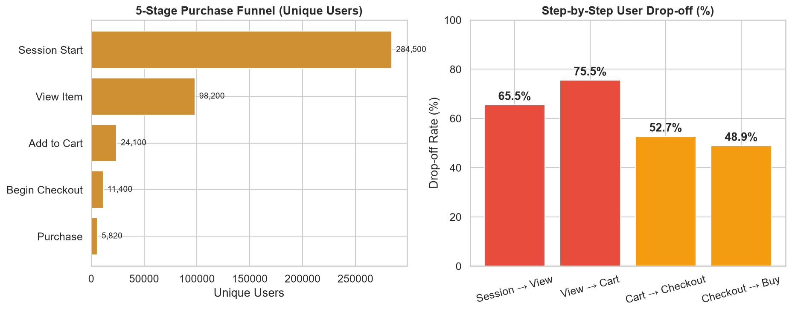
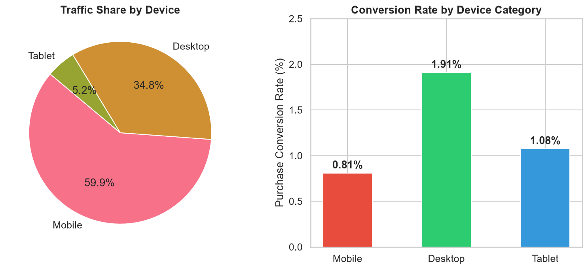
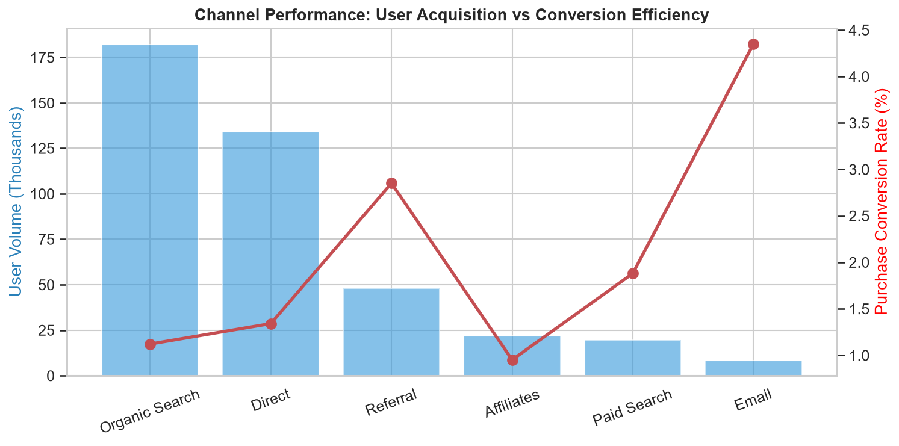
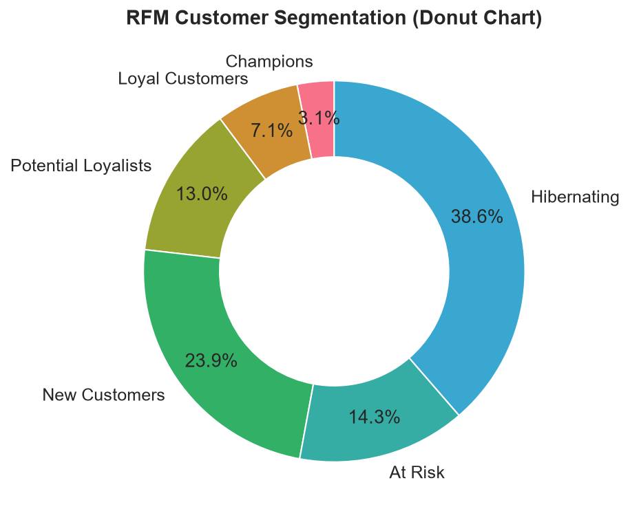

Top-of-Funnel Drop
65.5%
High drop-off: Session → View Item
Mobile Traffic Share
59.9%
Dominant traffic category across site
Desktop vs. Mobile CVR
2.35x
Desktop: 1.91% vs Mobile: 0.81%
Top Channel CVR
4.35%
Email channel leads in purchase intent
1. E-Commerce Conversion Funnel
5-Stage Funnel & User Drop-off Analysis
Tracking unique users from session initiation to final transaction

Key Growth Insight: 65.5% of visitors never discover a product, and 75.5% of product viewers do not add items to their cart. This indicates that discovery and product-page value communication represent higher upside than checkout payment fixes.
2. The Device Conversion Disparity
Mobile vs. Desktop Conversion Dynamics
Traffic share compared against actual purchase conversion rates

The Core Opportunity: Mobile generates the majority of sessions, but converts at less than half the rate of desktop. Closing just 30% of this gap via streamlined checkout would yield material incremental revenue.
3. Channel Efficiency & Attribution
Acquisition Volume vs. Conversion Efficiency
First-touch attribution comparing user volume with downstream purchase conversion

Channel Strategy: Organic and Direct drive brand awareness and volume, while Email and Referral deliver qualified buyers. Recommendations include scaling email lead capture and building retargeting flows for abandoned sessions.
4. Customer Lifecycle Segmentation
RFM (Recency, Frequency, Monetary) Breakdown
Behavioral user segmentation derived via BigQuery NTILE window scoring

5. Ranked Opportunity Roadmap
| Priority | Initiative | Observed Evidence | Expected Impact | Deliverable / Next Step |
|---|---|---|---|---|
| P0 | Mobile Checkout Friction Reduction | 2.35x desktop/mobile CVR gap on 60% traffic | High | A/B Experiment Proposal |
| P0 | Homepage Discovery & Curation | 65.5% drop-off at Session → View Item | High | Personalised product carousels |
| P1 | Automated Cart Recovery Sequences | 75.5% drop from View Item to Cart | Medium-High | Triggered email sequences |
| P1 | Scale High-CVR Channels (Email) | Email delivers 4.35% CVR vs 1.12% Organic | Medium | Lead capture optimization |
| P2 | At-Risk Cohort Win-Back Campaigns | 14.3% of customers falling into At-Risk cohort | Low-Medium | Lifecycle re-engagement campaign |